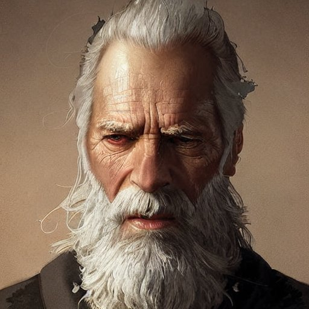

Você escolheu apoiar o Bispo Benedict

Robin Hood se juntou ao Bispo Benedict para ajudar os pobres e necessitados. Eles se tornam amigos e trabalham juntos para melhorar as condições de vida dos menos afortunados.
Robin Hood se juntou ao Bispo Benedict para ajudar os pobres e necessitados. Eles se tornam amigos e trabalham juntos para melhorar as condições de vida dos menos afortunados.